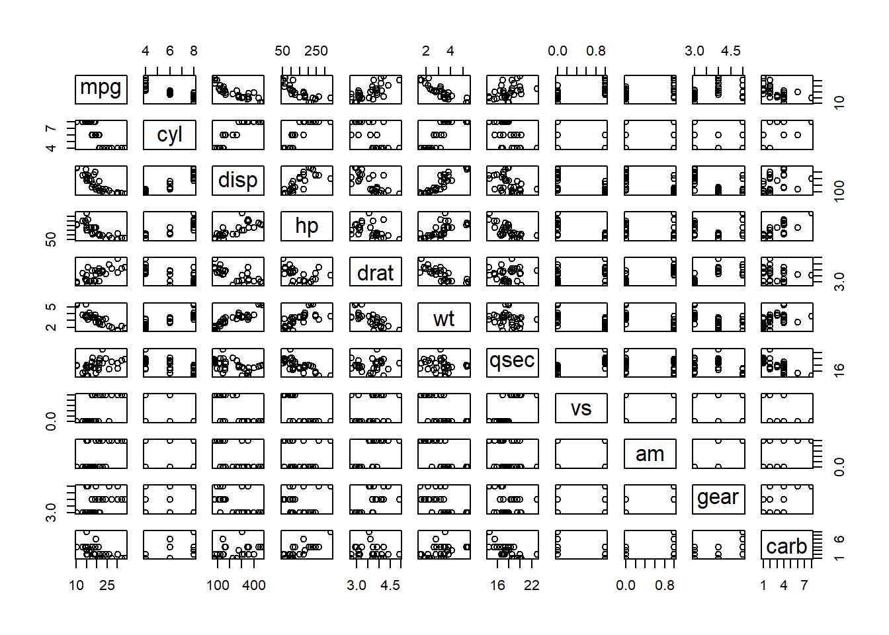

R is an interesting programming language that utilizes object oriented programming methods and structure to maximize the benefits of the four pillars of OOP, Encapsulation, Abstraction, Inheritance, and Polymorphism.
What makes the R programming language unique, interesting, and versatile is the ability to create two distinct types of objects that have different characteristics and uses. The principal differences between S3 and S4 objects include the way in which classes are defined (S3 setting ‘class’ attribute & S4 using a setClass() method before object instantiation) and the structure of the object (S3 objects are informal, classes are not formally defined, becoming an object when a ‘class’ attribute is assigned & S4 objects are formal, structured objects that require ‘class’ definitions to specify class name and slots).
#Load the "mtcars" data set and store to an r object 'my_cars'data("mtcars")my_cars<-mtcars#Print the first 5 rows of 'my_cars' objecthead(my_cars)
From the output above, the head() function executed, indicating that the object is an S3 object. Passing an S4 object as an argument to the head() function generates an error explaining that S4 objects are not subsetable.
The first line of output from the str() function call shows the objects type, in this case, it is a ‘data.frame’. Had this have been an S4 object, the output would have stated that the object is of a formal class and listed its name. This will be demonstrated in the Task 3 chunk of code that calls generic functions on both S3 and S4 objects to compare compatibility and output.
Task # 2 - Test Generic Functions
We can tell if an object is an S3 or S4 class system object by using the isS4() method; if it is an S4 object, TRUE is returned, if it is an S3 object, FALSE is returned. A few more ways to check the objects class system are using the str() function (which starts its output with Formal class if it is an S4 object) and the class() function which shows the class name; for S3 objects, it doesn’t reveal the type of object system, while for S4 objects, it gives the formal class name.
A generic function in ‘r’ is a fundamental utility of the ‘S3’ OOP system which allows a function call to behave differently based on the class of the object passed to it (method dispatch). When a generic function is called, r selects the method associated with the class of the object and uses a default if none are found. S3 objects method dispatch is based on the class attribute of the first argument and S4 can handle multiple dispatch (multiple arguments classes).
#Check to see if 'my_cars' is an S3 or S4 class objectisS4(my_cars)
[1] FALSE
#The output is 'FALSE' therefore 'my_cars' is an S3 object and the following#generic functions will dispatch:#print() - to display the object's dataprint(my_cars)
#summary() - gives a summary of the objects variables statisticssummary(my_cars)
mpg cyl disp hp
Min. :10.40 Min. :4.000 Min. : 71.1 Min. : 52.0
1st Qu.:15.43 1st Qu.:4.000 1st Qu.:120.8 1st Qu.: 96.5
Median :19.20 Median :6.000 Median :196.3 Median :123.0
Mean :20.09 Mean :6.188 Mean :230.7 Mean :146.7
3rd Qu.:22.80 3rd Qu.:8.000 3rd Qu.:326.0 3rd Qu.:180.0
Max. :33.90 Max. :8.000 Max. :472.0 Max. :335.0
drat wt qsec vs
Min. :2.760 Min. :1.513 Min. :14.50 Min. :0.0000
1st Qu.:3.080 1st Qu.:2.581 1st Qu.:16.89 1st Qu.:0.0000
Median :3.695 Median :3.325 Median :17.71 Median :0.0000
Mean :3.597 Mean :3.217 Mean :17.85 Mean :0.4375
3rd Qu.:3.920 3rd Qu.:3.610 3rd Qu.:18.90 3rd Qu.:1.0000
Max. :4.930 Max. :5.424 Max. :22.90 Max. :1.0000
am gear carb
Min. :0.0000 Min. :3.000 Min. :1.000
1st Qu.:0.0000 1st Qu.:3.000 1st Qu.:2.000
Median :0.0000 Median :4.000 Median :2.000
Mean :0.4062 Mean :3.688 Mean :2.812
3rd Qu.:1.0000 3rd Qu.:4.000 3rd Qu.:4.000
Max. :1.0000 Max. :5.000 Max. :8.000
#plot() - plots the variables on a graphplot(my_cars)

Task # 3 - Explore S3 vs. S4
#S3 object example#Create an S3 object using list() and initializing variables upon creations3_obj <-list(car ="Ferarri", year =2009, cost =135000)#Set the class of the object as an attributeclass(s3_obj) <-"car_s3"class(s3_obj)
[1] "car_s3"
#mode() - generic function to display object modemode(s3_obj)
[1] "list"
#print() - generic function dispatch to display objectprint(s3_obj)
#str() - generic function dispatch for display of the internal structurestr(s3_obj)
List of 3
$ car : chr "Ferarri"
$ year: num 2009
$ cost: num 135000
- attr(*, "class")= chr "car_s3"
# The output above uses the class() function to determine the class of the object# the output [1] "car_s3" is displayed because that is what the attribute was set to# the mode() returns [1] "list" because that is the object type. The print()# displays the attr(,"class") as [1] "car_s3" and str() states: - attr(*, "class")= chr "car_s3"#S4 class and object example#Create an S4 class using setClass() and define class variables upon creationsetClass("car_s4",slots =c(car ="character", year ="numeric", cost ="numeric"))#Instantiate a new S4 object by calling the new() and initializing the variabless4_obj <-new("car_s4", car ="Porsche", year =2009, cost =75000)class(s4_obj)
[1] "car_s4"
attr(,"package")
[1] ".GlobalEnv"
#mode() - generic function to display object modemode(s4_obj)
[1] "S4"
#print() - generic function dispatch to display objectprint(s4_obj)
An object of class "car_s4"
Slot "car":
[1] "Porsche"
Slot "year":
[1] 2009
Slot "cost":
[1] 75000
#str() - generic function dispatch for display of the internal structurestr(s4_obj)
Formal class 'car_s4' [package ".GlobalEnv"] with 3 slots
..@ car : chr "Porsche"
..@ year: num 2009
..@ cost: num 75000
# The output above uses the class() function to determine the class of the object# the output [1] "car_s4" attr(,"package") [1] ".GlobalEnv" is displayed because# it is an S4 object and the mode() returns [1] "S4", the object type.# The print() displays An object of class "car_s4" and the Slots/values, and# str() states: Formal class 'car_s4' [package ".GlobalEnv"] with 3 slots
{kind=link}